Everyday: guida per l'utente
Tutto quello che serve per configurare Everyday e pianificare le giornate.
Cos'è Everyday
Everyday è un pianificatore delle giornate. Dentro ci sono due tipi di cose: gli eventi, che una data ce l'hanno già (un concerto, una visita, un corso), e le attività, che una data devono ancora averla — le scrivi e l'app ti aiuta a decidere quando farle. Ogni attività richiede un certo tempo e, una volta messa in un giorno, diventa un blocco sulla linea di quel giorno, accanto agli eventi e agli appuntamenti del calendario. Le attività si possono anche legare a un evento («comprare i biglietti, due settimane prima»), così l'evento si porta dietro la sua lista di cose da fare. L'app può suggerire un piano per un giorno, una settimana o un mese, tenere allineato Google Calendar, aggiungere il tempo per arrivare in un luogo, e pianificare pasti e spese insieme all'app di ricette Ricette.
Funziona nel browser, su telefono o computer, e si installa come un'app normale. I dati restano tuoi: stanno sui tuoi dispositivi e in uno spazio privato su GitHub che vedi solo tu. Non c'è un account da noi, nessuna IA e niente da pagare.
Cosa non è: non è un calendario (gli appuntamenti arrivano da Google Calendar), non è un'app di note e non è uno strumento per un gruppo. Una persona, un insieme di dati.
Prima configurazione
Servono circa un quarto d'ora e un account GitHub (gratuito). Tutto avviene in Impostazioni: tocca l'ingranaggio in alto a destra. Ha tre schede — La mia giornata, Spostamenti, Collegamenti — e una sezione Avanzate per il resto.
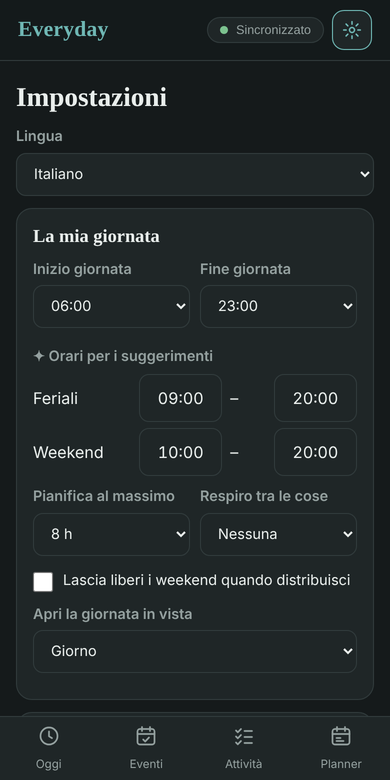
1. Installare l'app
Apri l'indirizzo dell'app in Chrome sul telefono, o in un browser qualsiasi sul computer. Su Android scegli Installa app (o Aggiungi a schermata Home) dal menu del browser; sul computer clicca la piccola icona di installazione nella barra dell'indirizzo. L'app funziona anche senza connessione; le nuove versioni arrivano da sole e una barra propone di ricaricare. In fondo alle Impostazioni vedi quale versione hai.
2. Collegare il tuo spazio su GitHub
È dove vengono salvati i dati e il modo in cui i tuoi dispositivi restano allineati.
- Su GitHub crea un repository privato e vuoto (un "repository" è semplicemente una cartella su GitHub), ad esempio
everyday-data. Non copiare quello di qualcun altro. - Crea un token di accesso personale (GitHub → Settings → Developer settings → Fine-grained tokens) che possa leggere e scrivere i Contents di quel repository. Un token è come una password fatta per le app.
- In Impostazioni → Collegamenti → Sincronizzazione con GitHub scrivi il tuo utente GitHub, il nome del repository e il token, poi tocca Salva e prova. L'etichetta in alto dice Sincronizzato quando funziona.
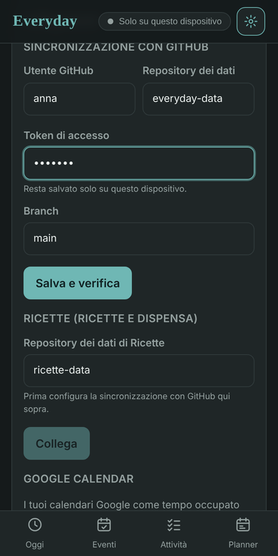
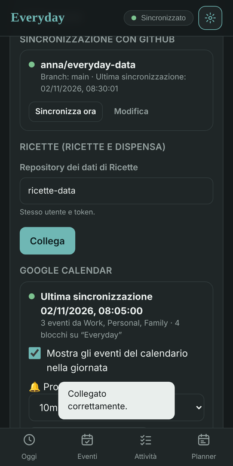
Il token resta sul dispositivo. Fai il passo 3 su ogni telefono o computer che usi: condividono tutti gli stessi dati, entro un minuto da ogni modifica.
3. Facoltativo: Ricette (ricette e dispensa)
Se usi anche l'app Ricette, scrivi il nome del suo repository dei dati in Impostazioni → Collegamenti → Ricette (lo stesso token deve poterlo usare). Everyday conosce allora le tue ricette e la dispensa, condivide la lista della spesa con Ricette e può pianificare pasti dalle ricette.
4. Facoltativo: Google Calendar
Questo collegamento gira su GitHub, non sul telefono, e richiede una configurazione una tantum dalla parte di Google. Impostazioni → Collegamenti → Google Calendar elenca i passi; in breve, crei un piccolo progetto Google Cloud, gli permetti di usare il tuo calendario e salvi tre "secret" nel tuo repository. Fatto questo, gli appuntamenti compaiono nell'app e il tuo piano compare in Google Calendar, con i promemoria.
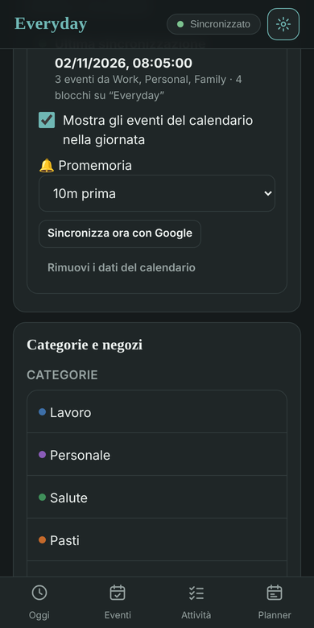
5. Spostamenti
In Impostazioni → Spostamenti scrivi l'indirizzo di casa e come ti muovi di solito (a piedi, bici, mezzi pubblici, auto). Basta questo perché l'app aggiunga il tempo di viaggio alle attività con un luogo. La chiave Google Maps è facoltativa; senza, l'app usa servizi di mappe gratuiti.
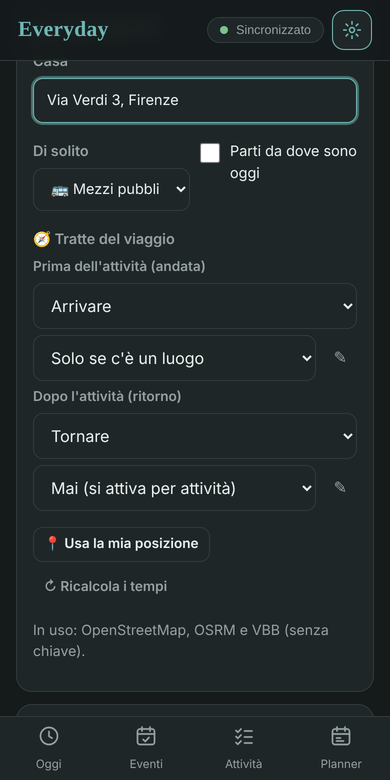
6. Una seconda persona
Ogni persona ha bisogno del proprio repository, del proprio token e (se la vuole) della propria configurazione del calendario. Sul suo dispositivo apri lo stesso indirizzo dell'app e scrivi in Impostazioni → Collegamenti il suo repository. Se il dispositivo conteneva prima i dati di qualcun altro, l'app chiede se partire vuoto — scegli quello. Svuota questo dispositivo, nella stessa sezione, fa lo stesso in qualsiasi momento.
Le quattro schede
| Scheda | A cosa serve |
|---|---|
| Oggi | La casa. La prossima mossa con le ore di partenza e inizio, la lista di oggi, le cose urgenti, la settimana a colpo d'occhio. Toccando il nome dell'app torni qui. |
| Eventi | Tutto quello che ha una data fissa, dal più vicino: i tuoi eventi e quelli di Google Calendar, ognuno con quanto è pronto. |
| Attività | Tutto quello da fare: Da pianificare, Pianificate, Fatte, la lista Salvate delle cose che tornano (palestra, pulizie, pasti) e la lista della Spesa. Ricerca, filtri, ordinamento, importazione da testo incollato. |
| Planner | Il tuo piano come Giorno, Settimana o Mese, con un cassetto delle attività ancora da pianificare e il pulsante Pianifica che le sistema per te. |
L'ordine è quello in cui si pianifica: guardi cosa c'è oggi, metti dentro le cose con una data, aggiungi le attività attorno, poi lasci che il Planner sistemi tutto. L'ingranaggio in alto a destra apre le Impostazioni. Sul telefono, scorri a destra o a sinistra per passare da una scheda all'altra. L'etichetta accanto all'ingranaggio dice se i dati sono allineati: Sincronizzato, In corso, Offline, oppure Solo su questo dispositivo finché non hai collegato nulla.
Oggi
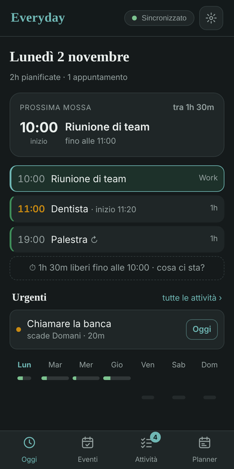
La scheda Prossima mossa risponde a una domanda sola: quando devo muovermi? Per un'attività con un luogo mostra due ore — parti 11:00 → inizio 11:20 — e conta i minuti alla partenza. Partito spunta lo spostamento, Fatto chiude l'attività, lo spillo apre l'indirizzo in Maps, Sposta apre il blocco. Sotto, la lista di oggi mostra in ordine blocchi e appuntamenti (un'ora arancione vuol dire «parti a quest'ora»), e una riga dice quanto tempo libero hai fino alla prossima cosa — toccala per vedere cosa ci sta.
Urgenti elenca ciò che ha bisogno di te: attività in ritardo, attività in scadenza nei prossimi giorni che non hanno ancora un giorno, attività a cui manca un dettaglio. Oggi ne mette una nel prossimo spazio libero; Sistema la apre sul dettaglio mancante. La striscia della settimana in fondo mostra quanto è pieno ogni giorno; tocca un giorno per aprirlo nel Planner.
Ogni mattina, la prima volta che apri Oggi, quello che è rimasto da fare nei giorni passati torna nel piano della settimana; una riga dice quante cose si sono spostate, con Annulla.
Eventi
Un evento è qualcosa con una data che non scegli tu: il concerto del 20 maggio, il dentista giovedì alle 9, il matrimonio di Luca a giugno. Lo metti dentro appena lo sai, e da quel momento è nel piano, in Google Calendar e in Oggi quando arriva il giorno. Il planner non sposta mai un evento.
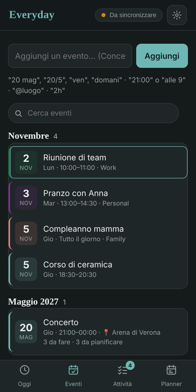
Aggiungere un evento
Scrivilo nel campo in cima alla scheda Eventi: Concerto 20 mag 21:00 @Arena 3h, Dentista 12/11 alle 9, Matrimonio di Luca 12 giu, Corso di ceramica gio 18:30 2h. L'app legge la data (20 mag, 20/5, ven, domani), l'ora (21:00, alle 9), il luogo (@…) e la durata (2h). Senza ora è un evento di tutto il giorno. Senza data si apre l'editor e la chiede — la data è l'unica cosa di cui un evento ha bisogno.
Tocca un evento per aprirlo. È lo stesso editor delle attività, con le stesse parti nello stesso ordine; cambia solo la prima:
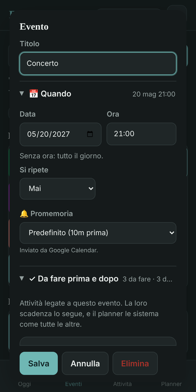
| Parte | Cosa imposti |
|---|---|
| Quando | La data (obbligatoria) e l'ora (vuota = tutto il giorno); la ripetizione per un corso settimanale; il promemoria. |
| Da fare prima e dopo | Le attività legate all'evento, con il loro anticipo e se ognuna è pianificata — vedi sotto. |
| Durata e categoria | Quanto dura (due ore finché non dici altro), un margine dopo, la categoria. |
| Luogo, Passaggi, Checklist, Note | Esattamente come per un'attività: un luogo aggiunge Arrivare col tempo di viaggio reale, così Oggi mostra parti 20:15 → inizio 21:00. |
Attività legate a un evento
È questo che rende utili gli eventi. Nell'evento, + Da fare prima / dopo aggiunge un'attività con un anticipo: Comprare i biglietti · 2 settimane prima, Prenotare il treno · 1 settimana prima, Ringraziare Anna · 1 giorno dopo. Ognuna è un'attività normale: compare nella scheda Attività (segnata 📅 col nome dell'evento), prende la scadenza dall'evento, finisce in Urgenti se scivola, e il Planner la sistema come tutte le altre. Sposti l'evento e tutte le sue attività si spostano con lui.
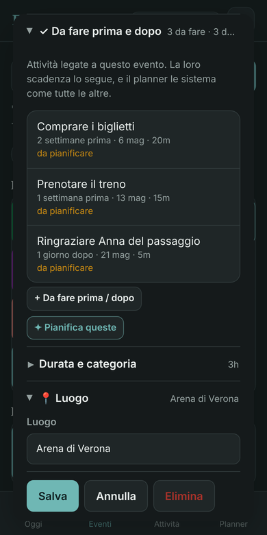
Dentro l'evento vedi a colpo d'occhio a che punto sei — 3 da fare · 2 da pianificare, poi ✓ tutto fatto — e Pianifica queste sistema quelle aperte nei giorni prima dell'evento. Lo stesso riassunto compare nella lista Eventi e nella prossima mossa di Oggi. Apri un'attività legata e la sua parte Quando dice Per l'evento «Concerto» · 2 settimane prima; lì cambi l'anticipo o la slegi.
Anche gli eventi importati da Google Calendar possono avere attività legate: aprine uno dalla lista Eventi e aggiungile allo stesso modo. L'evento resta di Google (lo cambi lì), ma la sua preparazione vive qui.
Gli eventi nel piano
Nella linea del Giorno un evento è un blocco con 📅 e un colore più deciso. Toccando un punto vuoto della linea crei un nuovo evento a quell'ora (hai scelto un'ora, quindi è fissa); + Aggiungi → Evento fa lo stesso. Il blocco di un evento lo puoi comunque trascinare a mano; il planner, il riordino del mattino e Pianifica lasciano stare gli eventi e ci lavorano attorno. Gli eventi vanno in Google Calendar come tutto il resto, quelli di tutto il giorno come voci di tutto il giorno.
Attività
Aggiungere un'attività
Scrivi nel campo in cima alla scheda Attività e premi Invio. Qualche scorciatoia evita di aprire l'attività: Dentista 1h imposta quanto dura, !1…!5 quanto è importante (1 = molto), #lavoro la categoria, @Via Roma 12 il luogo, ven o domani il giorno, entro ven una scadenza, ogni lun una ripetizione settimanale. Con un giorno e un'ora (Chiamare Marco mar 15:00) l'attività va direttamente nel piano. Importa prende una lista intera che incolli, un'attività per riga.
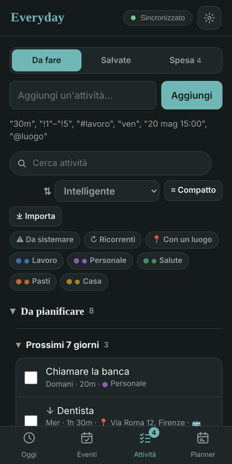
Tocca un'attività per aprirla. È divisa in parti che puoi chiudere; quello che non tocchi tiene un valore ragionevole.
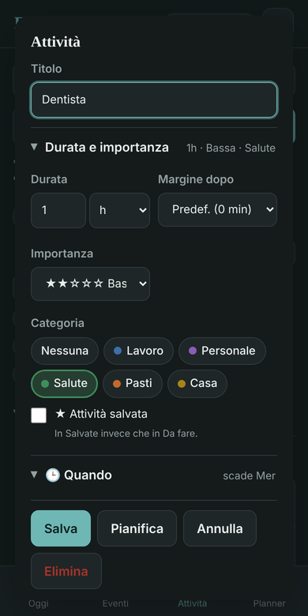
| Parte | Cosa imposti |
|---|---|
| Durata e importanza | Quanto dura (30 minuti finché non dici altro), un margine dopo (qualche minuto in più aggiunto al blocco), quanto è importante, la categoria e l'interruttore Attività salvata. |
| Quando | Giorno e ora, scadenza, ripetizione, la parte della giornata che preferisci, cose che devono venire prima, finestre di tempo (es. orario d'ufficio), promemoria. Per un'attività legata a un evento: l'evento e l'anticipo al posto della scadenza. |
| Luogo | Un indirizzo o un link. Con un luogo l'app aggiunge Arrivare (e, se vuoi, Tornare) col tempo di viaggio reale. |
| Passaggi | Parti dell'attività, ognuna con la sua durata; nel piano ogni passaggio ha il suo orario. Tocca ⚓ sul passaggio a cui si riferisce l'ora (es. Allenamento alle 19:00, così Arrivare viene prima). |
| Checklist | Cose da spuntare mentre la fai. |
| Regole | Cosa deve succedere prima o dopo, a seconda di come va (qualcosa da preparare prima, un seguito se fallisce, una spesa prima di un pasto…). Si vede quando Regole, modelli e preparazioni è attivo in Impostazioni → Avanzate. |
| Note | Testo libero. |
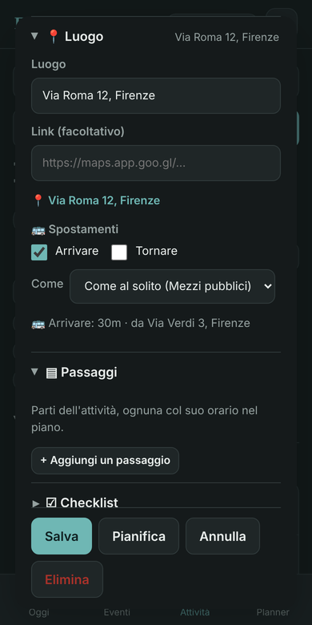
Attività salvate
Le cose che tornano senza un ritmo fisso — palestra, pulizie, pasti — stanno in Salvate. Sono attività normali; l'unica differenza è che restano in quella lista e le metti in un giorno quando vuoi, da + Aggiungi → Salvate nella Giornata. Spunta Attività salvata dentro un'attività per spostarla lì e indietro.
Attività ricorrenti
Nella parte Quando scegli ogni giorno, giorni feriali, settimanale (scegli i giorni) o mensile, con ogni N e, se vuoi, una data di fine. Dai all'attività un giorno e un'ora e ogni ricorrenza delle prossime settimane va nel piano da sola (segnata ↻). Cambia una singola ricorrenza dal suo blocco, o tutta la serie dall'attività; quando cambi o elimini da un blocco l'app chiede solo questa o questa e le successive.
Trovare le cose
Il campo di ricerca cerca in titoli, note, luoghi, passaggi e checklist. I filtri: Da sistemare mostra le attività a cui il planner chiede ancora un dettaglio (durata, luogo, indirizzo di casa…), Ricorrenti, Con un luogo, o una categoria. Compatto mostra una riga per attività quando la lista si allunga. Puoi anche ordinare: intelligente, il tuo ordine (trascina ⠿), scadenza, importanza, durata, categoria, data di aggiunta.
Pianificare
Le viste
Il Planner mostra il tuo piano come Giorno (una linea del tempo dall'inizio alla fine della tua giornata — le ore le scegli in Impostazioni → La mia giornata — con una riga rossa per adesso), Settimana (sette colonne) o Mese (una griglia). Ogni giorno ha una piccola barra di carico: quanto è pieno rispetto al limite giornaliero che hai scelto. ‹ › si muovono nel tempo, Oggi ti riporta indietro, e toccando un giorno nella Settimana o nel Mese lo apri.
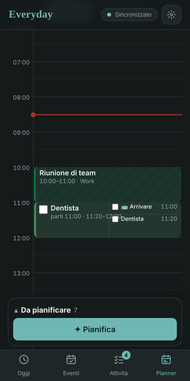
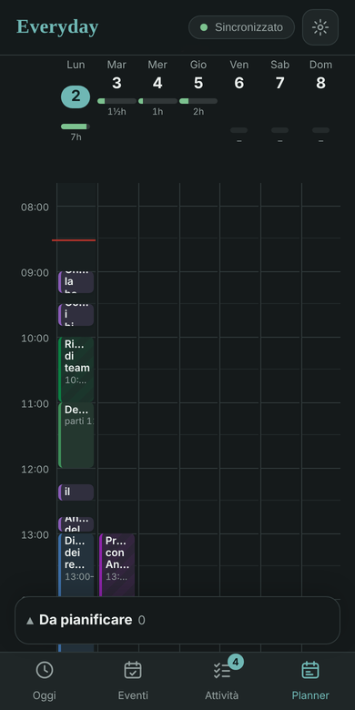
Il cassetto
In fondo al Planner c'è Da pianificare: le attività che non hanno ancora un giorno. Aprilo per vederle (ricerca, ordinamento, filtri), tocca ↓ su una riga per metterla nel prossimo spazio libero del giorno che hai davanti, oppure tieni premuto e trascinala sulla linea del tempo, su un giorno della settimana o su una cella del mese. Lo stesso cassetto mostra le anteprime quando lasci pianificare l'app.
Mettere un'attività in un giorno a mano
- Tocca un punto vuoto della linea del Giorno: un nuovo evento a quell'ora.
- + Aggiungi → un'Attività (nuova o dalla lista), un Evento, una Salvata o un Pasto.
- Trascina un blocco per spostarlo; trascina il bordo inferiore per allungarlo o accorciarlo. Tocca un blocco per spuntarlo, vedere passaggi e checklist, o cambiarlo.
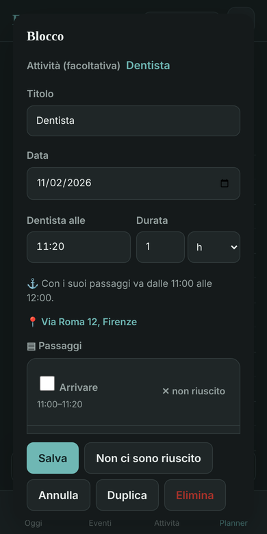
Lasciar pianificare l'app
✦ Pianifica è un unico percorso guidato. Scegli il periodo (oggi, qualche giorno, una settimana, due, il mese). Se ad alcune attività manca un dettaglio che serve al planner, lo chiede lì — una durata con un tocco, un luogo, se dividere un'attività più lunga del limite giornaliero — senza aprirle. Poi le anteprime compaiono nel piano, dentro le tue ore di pianificazione, rispettando scadenze, importanza, il tuo ordine, finestre di tempo, cose che devono venire prima e il limite giornaliero; ogni anteprima dice perché è finita lì. Togli quelle che non vuoi, poi Aggiungi nel cassetto le rende reali e il calendario si aggiorna. Le attività già pianificate restano in disparte, così non le pianifichi due volte.
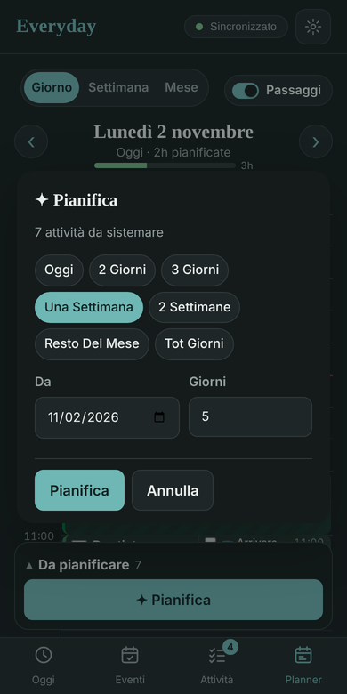
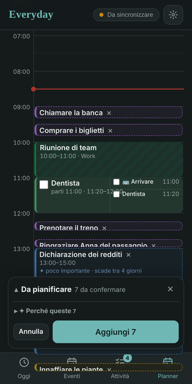
Se un blocco si sovrappone a un evento del calendario, o viene prima di qualcosa da cui dipende, compare un avviso con un pulsante Sistema. Un'attività con ⚠ manca di un dettaglio che il planner vorrebbe: Da sistemare nei filtri le elenca, e il percorso Pianifica glielo chiede.
Spostamenti
Dai un luogo a un'attività e l'app aggiunge Arrivare prima, col tempo di viaggio da casa (o dal luogo dell'attività precedente quel giorno, se nel frattempo non torni a casa) e il mezzo che hai scelto. Tornare dopo è facoltativo. Entrambi sono passaggi dell'attività: li vedi sul blocco, li puoi spuntare, e il blocco cresce intorno all'attività in modo che l'attività stessa resti al suo orario. Ovunque compaia il blocco — Oggi, Planner, Google Calendar — si legge con due ore: parti 11:00 · 11:20–12:20.
In Impostazioni → Spostamenti → Tratte del viaggio decidi quando ciascuna viene aggiunta: solo se c'è un luogo, per tutte le attività (un'attività senza luogo mostra allora un «?» di 30 minuti, per ricordarti di contare lo spostamento) o mai (la attivi per singola attività). Ogni attività può comunque fare diversamente nella sua parte Luogo, e scegliere il proprio mezzo.
Le tratte sono attività salvate. Prima dell'attività (andata) e Dopo l'attività (ritorno) puntano ciascuna a un'attività salvata — all'inizio Arrivare e Tornare. Le trovi in Salvate e le modifichi dalle Impostazioni: rinominale, o dai loro dei passaggi — ad esempio Preparare la borsa (5 min) e Viaggio. Il passaggio segnato ⚓ (o il primo) riceve il tempo di viaggio dalla mappa; gli altri tengono la loro durata. Puoi anche scegliere qualsiasi altra attività salvata per una delle due tratte.
I tempi di viaggio vengono da servizi di mappe gratuiti. Con una chiave Google Maps nelle Impostazioni si usa Google e i mezzi pubblici funzionano ovunque. Un «?» su un'attività significa che il tempo non è ancora noto: il planner conta 30 minuti finché non lo è, e ⚠ ti avvisa quando un indirizzo non è stato trovato. Parti da dove sono oggi usa la posizione del telefono per il primo spostamento del giorno.
Pasti, lista della spesa e spese
Con Ricette collegato, + Aggiungi → Pasto mette un pasto in un giorno e ti fa scegliere le ricette; il passaggio di preparazione prende la durata dalle ricette. Quando arriva il momento (o quando spunti il passaggio di controllo) l'app guarda la dispensa: quello che manca va in lista della spesa, e una spesa viene pianificata prima del pasto.
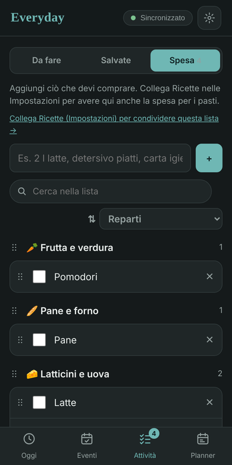
La parte Spesa della scheda Attività (Da fare · Salvate · Spesa; l'app ricorda quale hai usato l'ultima volta, e un blocco di spesa la apre direttamente) è la stessa lista di Ricette, in entrambe le direzioni: aggiungi, cambia, spunta o elimina qui e lo vedi lì entro un minuto. Raggruppala per reparto, ricetta o negozio, ordinala A–Z o per data di aggiunta, cercala. Tocca un articolo per cambiarne quantità, nota o i negozi che lo hanno.
I negozi (Impostazioni → Categorie e negozi) hanno orari di apertura e, se vuoi, un indirizzo. Indica quali negozi hanno un articolo e le spese vengono pianificate quando quei negozi sono aperti, come un solo giro o uno per negozio. Una spesa è un blocco come gli altri; spuntare gli articoli mentre li compri li segna come comprati in Ricette, e finiscono in dispensa quando lì «metti via la spesa».
Google Calendar
Una volta configurato, il collegamento funziona nei due sensi:
- I tuoi calendari → Everyday. Gli appuntamenti dei calendari che importi compaiono nel piano nel loro colore, come tempo occupato attorno a cui il planner lavora. Qui non si cambiano; un link li apre in Google Calendar.
- Everyday → Google Calendar. Tutto quello che pianifichi viene scritto in un calendario chiamato Everyday, con un promemoria (quello predefinito da Impostazioni → Collegamenti → Google Calendar, o quello dell'attività). Un'attività con uno spostamento è un solo evento che parte quando devi uscire, intitolato Dentista 11:20 · parti 11:00, così il promemoria suona prima che tu debba andare. I tuoi eventi hanno un 📅; quelli di tutto il giorno diventano voci di tutto il giorno. Sposta o elimina un evento Everyday in Google Calendar e il piano lo segue.
Il collegamento si aggiorna ogni ora e poco dopo ogni modifica al piano; Sincronizza ora con Google lo aggiorna a mano. La sezione in Impostazioni mostra quando è girato l'ultima volta e quanti appuntamenti sono arrivati. Rimuovi i dati del calendario elimina dal repository gli appuntamenti importati — utile se un repository è stato copiato da quello di un'altra persona e mostra il suo calendario.
Una settimana tipo
Domenica sera, dieci minuti — da sinistra a destra tra le schede. Apri Eventi e metti dentro tutto quello con una data che hai saputo durante la settimana (Dentista gio 9:00 @…, Cena da Marco sab 20:00); per quelli grossi aggiungi cosa deve succedere prima (+ Da fare prima / dopo). Poi Attività: svuota la testa, con una durata quando la sai (Chiamare la banca 20m, Dichiarazione dei redditi 2h !2) e un luogo per le cose che succedono da qualche parte. Metti i pasti della settimana nei loro giorni (+ Aggiungi → Pasto) e scegli le ricette. Poi Planner → ✦ Pianifica → una settimana: rispondi ai due o tre dettagli che chiede, guarda le anteprime, trascina altrove quella o due che vuoi, Aggiungi. Gli appuntamenti c'erano già, quindi niente ci finisce sopra; la spesa è stata messa prima del primo pasto che ne ha bisogno.
Ogni mattina. Apri l'app: Oggi mostra la prossima mossa con l'ora di partenza (per un evento dice anche quanto è pronto), la lista della giornata, e quello che è scivolato da ieri già rimesso nel piano (Annulla se non sei d'accordo). Google Calendar ti avvisa prima di ogni blocco. Urgenti mostra cosa aspetta una decisione — un tocco lo mette in oggi. Se la giornata sembra troppo piena, apri il Planner e trascina qualcosa a domani.
Durante il giorno. Spunta i blocchi man mano che finisci (per quelli lunghi, spunta i passaggi). Una riunione finita prima? La riga del tempo libero in Oggi dice quanto hai e cosa ci sta. È saltata fuori una cosa nuova? Una data → Eventi (Concerto 20 mag 21:00); una cosa da fare → Attività (chiamare Marco domani 15m), o mettila in oggi da Urgenti. Fai la spesa dalla scheda Spesa, spuntando gli articoli mentre finiscono nel carrello.
Sera. Quello che non hai fatto resta aperto: domattina è di nuovo nel piano, e il prossimo Pianifica riprende il resto. Le attività in ritardo stanno in cima a Urgenti e a Da pianificare, così non si perdono.
Ogni tanto. Le cose ricorrenti (palestra lunedì e mercoledì alle 19:00, pulizie settimanali) si impostano una volta e compaiono da sole; la lista Salvate tiene quello che torna senza un ritmo. Impostazioni → La mia giornata è dove regoli le ore della giornata, il limite giornaliero e il respiro dopo le attività quando i piani sembrano troppo stretti o troppo larghi.
Consigli e problemi comuni
| Situazione | Cosa fare |
|---|---|
| L'etichetta dice Offline o mostra un errore | Controlla la connessione, poi Impostazioni → Collegamenti → Sincronizza ora. Un token scaduto o senza più accesso mostra lì un errore; creane uno nuovo. |
| Due dispositivi mostrano cose diverse | Aspetta un minuto con l'app aperta su entrambi; ogni modifica si sincronizza entro un minuto. Le modifiche fatte nello stesso momento vengono unite: vince la più recente. |
| L'app sembra vecchia | Le nuove versioni arrivano da sole; una barra propone di ricaricare quando ne arriva una mentre l'app è aperta. In fondo alle Impostazioni vedi la versione. |
| Su un dispositivo compaiono i dati di un'altra persona | Impostazioni → Avanzate → Svuota questo dispositivo, dopo aver controllato che il repository indicato sia quello giusto. Se è il repository stesso a essere stato copiato da un altro, elimina prima i suoi file su GitHub (per il calendario: Impostazioni → Collegamenti → Google Calendar → Rimuovi i dati del calendario). |
| Un'attività mostra ⚠ | Aprila: si apre sul dettaglio mancante (durata, luogo, indirizzo di casa nelle Impostazioni, o un tempo di viaggio ancora in ricerca). |
| Tempi di viaggio mancanti o sbagliati | Impostazioni → Spostamenti: controlla indirizzo di casa, mezzo e Ricalcola i tempi. Un indirizzo si trova se ha via, numero e città. |
| Il piano è sempre troppo pieno | Impostazioni → La mia giornata: abbassa Pianifica al massimo, restringi le ore dei suggerimenti, aggiungi respiro dopo le attività. |
| Un evento è nel giorno sbagliato | Aprilo da Eventi e cambia la data: il suo blocco e tutte le attività legate si spostano con lui. Nella vista Giorno puoi anche trascinare il blocco. |
| Voglio i miei dati | Impostazioni → Avanzate → Scarica backup dà un unico file con tutto; il tuo repository su GitHub contiene gli stessi file. |